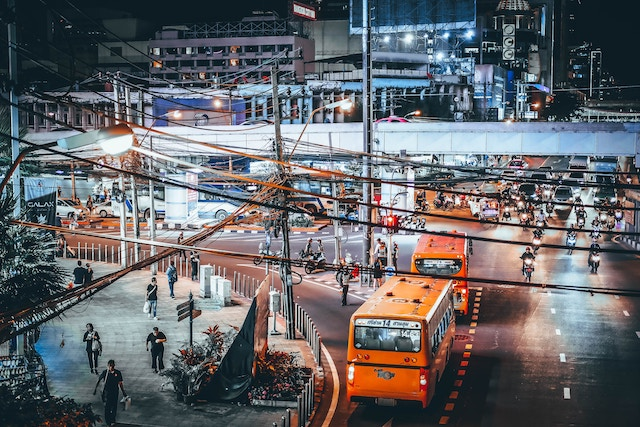
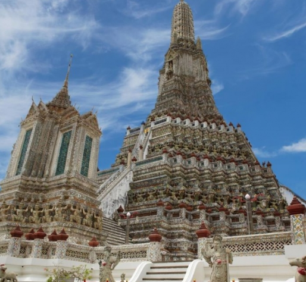

1. Asia
태국
▶ 여행시기: 11월 ~ 3월▶ 추천 장소
|  | 동남아시아 여행의 중심지인 방콕은 따뜻한 날씨, 저렴한 물가, 이국적인 분위기, 신나는 밤 문화, 아무리 먹어도 질리지 않는 음식 등 겨울 여행지로서의 모든 매력을 갖추고 있다. 방콕에는 태국의 전통문화를 엿볼 수 있는 화려한 왕궁과 사원이 많다. |
|  | 방콕의 대표 관광지인 왕궁은 카오산 로드에서 15분 정도 걸어가면 나온다. 방콕에서 가장 규모가 크고 역사가 깊은 왓 포는 왕궁 바로 옆에 자리하고 있는 사원이다. 이곳에는 발 길이만 5m에 달하는 세계 최대 규모의 황금색 와불상이 있다. 왓 포에서 배를 타고 강을 건너면 ‘새벽 사원’이라는 이름의 왓 아룬을 볼 수 있다. 탑 위에서 보는 아름다운 전경은 쉽게 잊을 수 없을 거다. |
 |
또한, 태국 음식은 혀가 아리는 매운맛, 강렬한 신맛, 기분이 좋아지는 단맛 등 한 요리에서도 여러 가지 풍부한 맛을 느낄 수 있는 게 특징이다. 방콕은 거리 곳곳에서 볼 수 있는 포장마차부터 럭셔리한 루프탑 바와 레스토랑까지 예산 따라 다양한 먹거리 세계를 경험할 수 있다는 점도 큰 매력이다. 쌀로 만든 국수에 숙주나물, 다진 마늘, 양파 등을 넣고 볶아낸 팟타이, 닭고기와 코코넛밀크로 만든 ‘마사만 커리’, 머드크랩을 넣어 만든 ‘푸팟퐁 카리’, 새우를 주재료로 한 시큼하면서 매콤한 수프인 똠얌꿍… 게다가 두리안, 망고스틴, 람부탄, 파파야, 코코넛 등 저렴하고 달달한 열대과일까지! 하루에 네 끼를 먹어도 모자랄 것이다. *팁: 방콕에서는 도시 곳곳에서 플리마켓을 볼 수 있어요. 현지 디자이너가 만든 독특한 수공예품, 의류, 액세서리 등에 관심이 많은 분은 미리 체크해 보세요. |